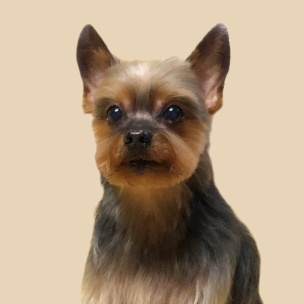
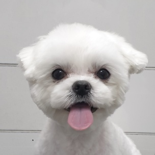
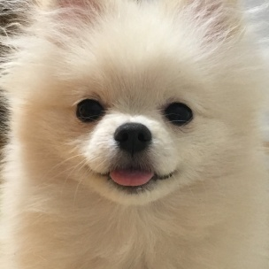
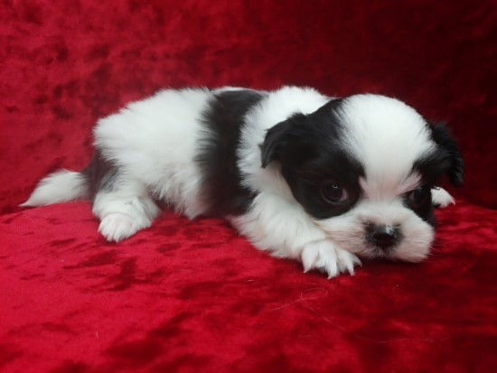
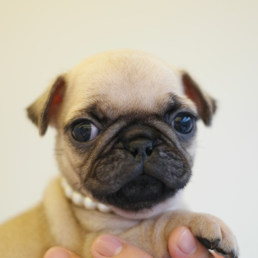
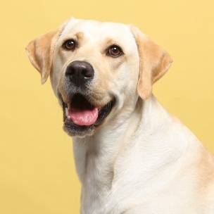
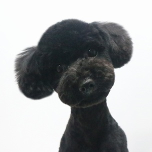
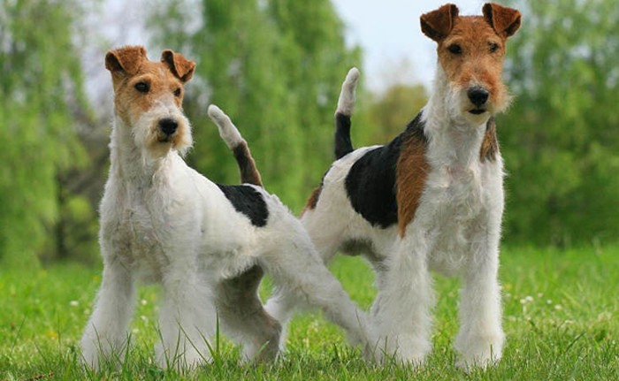
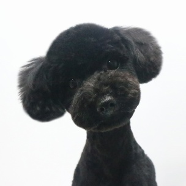
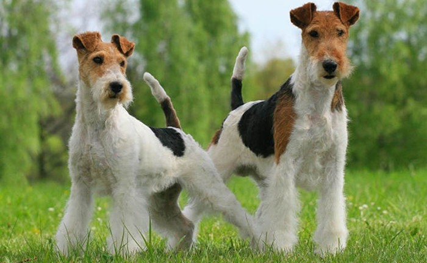

애완견 종류
애완견 종류
활달한 강아지
- 요크셔테리어
- 생기있고 활달한 성질을 가지고 있으며 자신보다 몸집이 큰 개나 집에 들어온 침입자를
겁내는 일이 없어 좋은 번견이고 우리나라 최고의 가정견으로 자리 잡고 있다.
- 말티즈
- 애정이 많고, 충실하며 활발한 성격을 소유하고 있다. 이 종은 1급 가정견으로 요크셔테리어와 함께 우리나라
최고의 가정견으로 자리잡고 있다.
- 포메라니안
- 활기차고 명랑한 개로 유명하고, 걷는 모습이 우아하다. 충실하고 우호적인 성격이 가장 먼저 거론된다.
- 골든리트리버
- 이 견종은 충성심이 강하고 성격이 활달하여 어린아이나 여성이 상대하기에 적합한 견종이다. 참을성 또한 강하여
현재는 실내에서도 많이 길러지고 있다.



 활달한 강아지
활달한 강아지
처음으로
온순한 강아지
- 쉬즈
- 얼굴에서 풍기는 모습처럼 온순,쉽게 친숙해지고 우호적이며, 어린아이나 여성들이 기르기에 적합한 견종이다.
- 퍼그
- 매우 사려가 깊고 사랑스러운 견종이며 그다지 손질이 필요하지 않고 식사량에 비해 많은 운동량이 필요하지 않다.
- 레브라도 리트리버
- 침착하고 영리하여 어린이들을 안심하고 맡길 수 있다. 사람을 즐겁게 해주려는 성질이 있다. 공을 가지고 노는것을
가장 좋아한다. 현재 맹인 안내견과 마약견으로 활동중이다. 온순한 강아지를 좋아하는 분에게는 적합한 견종이다.



온순한 강아지
처음으로
사납지만 복종적인 강아지
- 미니어쳐핀셔
- 경계심이 강하고 영리하며 작은 몸집에 비해 매우 용감하다. 주인에게 매우 복종적이며 작은 몸집에
보디가드 역할을 충실히 수행한다.
- 푸들
- 사납진 않으나, 상당히 복종적이며, 지능지수가 애완견종 중 가장 뛰어나다.
- 폭스테리어
- 가정에서 키우기에 적합한 품종이다. 보호본능이 강하고 정이 많다. 하지만 사냥을 하던 본능이 조금은
남아있어 사나운 면이 있다. 이 종을 좋은 품종으로 기르기 위해서는 어릴 때부터 엄한 훈련이 필요하기도 하다.
 

사납지만 복종적인 강아지


사납지만 복종적인 강아지
처음으로
건강한 강아지는
- 코가 젖어있고 눈곱이 없어야 합니다.
- 털에 윤기가 있는 아이로 선택해야 합니다.
- 입에서 고약한 냄새가 나면 병이 있다는 증거입니다.
- 가장 활발하게 움직이는 녀석을 선택하는게 좋습니다.
- 강아지들 중에서 적당한 체구를 유지한 강아지가 좋습니다.